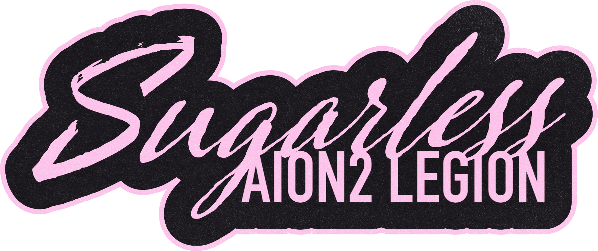
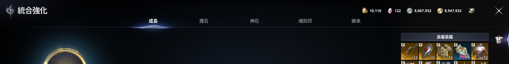
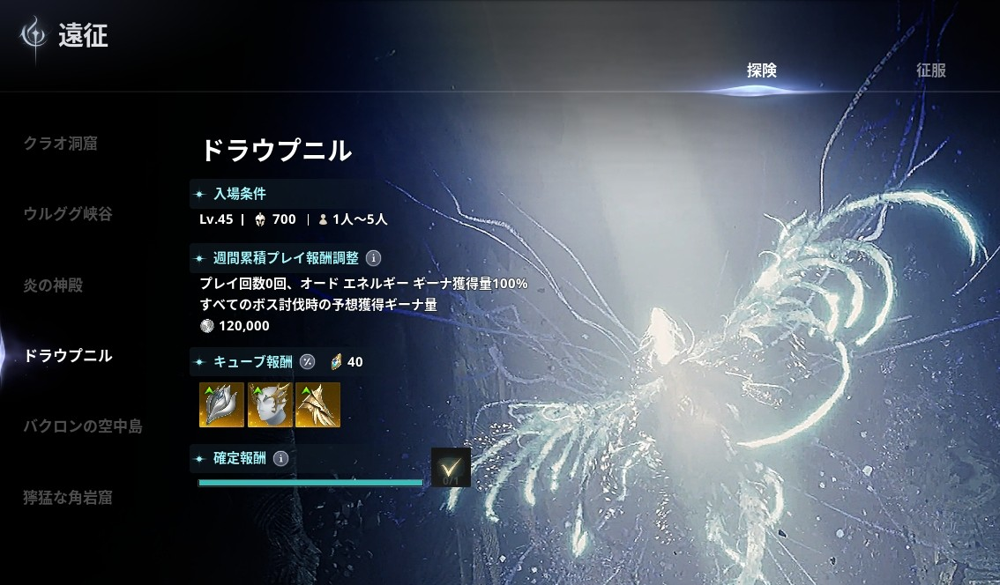
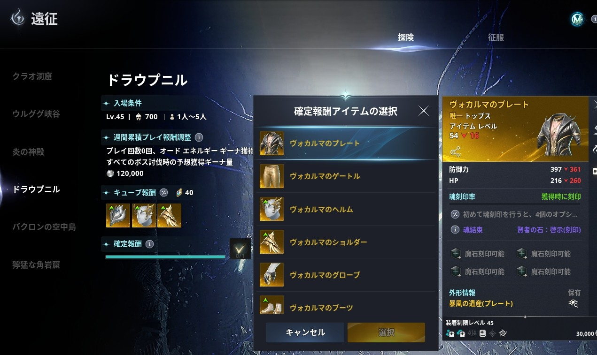
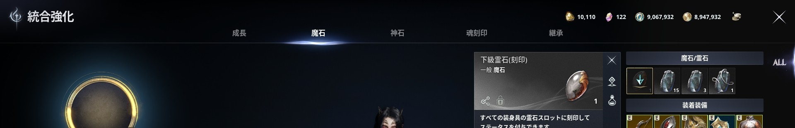
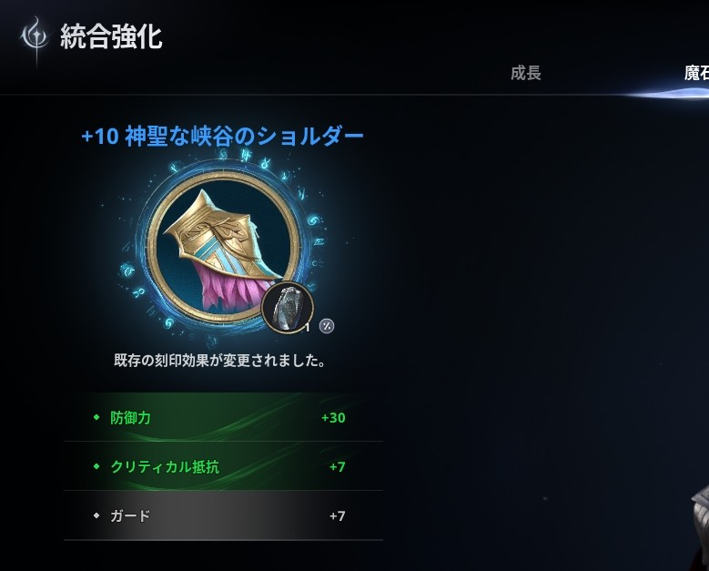
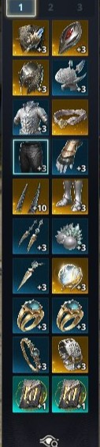

IL GUIDE
AION2(アイオン2)で、ストーリー完了からIL1000、さらにIL1400までアイテムレベルを上げる手順をまとめています。部位別の装備目安も掲載しているので、IL上げの参考にしてください。
| ▶ ILの目安 | ▶ ①ストーリー進行 | ▶ ②IL1000〜1400 |
| ▶ ③届かないとき | ▶ 部位別の装備目安 | ▶ ショートカット |
| IL | タイミング | やること |
|---|---|---|
| 700〜800 | ストーリー完了時点 | ①ストーリー進行 |
| 1000 | アミュレット・ベルト強化とIDで到達 | ②IL1000〜1400 |
| 1400 | 部位ごとに底上げして到達 | 部位別の装備目安 |
メインストーリーを進めつつ、サブクエも並行して消化しましょう。マップのダンジョンは近くにあれば寄るのがおすすめです。
| マップ表示 | ダンジョン |
|---|---|
| ? | シールダンジョン(封印ダンジョン) |
| 焚火マーク | 駐屯地ダンジョン |
| 強化の目安 | 伝承等級(青)の装備は +5まで 強化 |
|---|---|
| 強化の場所 | Esc → N の統合強化から |

| 手順 | 内容 |
|---|---|
| 1 | 緑を+10まで強化 |
| 2 | 装備から外して物質変換(Esc → Alt+H)で青に |
| 3 | 青を+10まで強化 |
| 4 | 同じ手順で黄色に |
※必要素材:強化スクロール・ギーナ(?と焚火のダンジョンで入手)
| ID | 内容 |
|---|---|
| 探索(Easy) 征服(Hard) | 箱を一定数開けると装備確定 |
| 探索ドラウプニル IL700以上 | 箱を3回開けると防具を選べる ・プレートがおすすめ(らしい) ・+10にするとILが少し楽だった |


| 方法 | 内容 |
|---|---|
| フィールドボス | ガルトゥア、ラグタなど唯一等級装備が貰えるフィールドボスに参加(天だとカシャパ、タルタンとか) |
| イベント | 1h置きのイベントに参加してシューゴポイントを貰い、ディーヴァニオン結晶と交換 シューゴポイントで貰えるアイテムでスティグマシャードもとても大事なものになります。ILがどうしても足りないとかでなければディーヴァニオン結晶を急いで交換しなくてもいいです。 |
※多分ここまでしなくても1000なってます。
| 部位 | 目安とポイント |
|---|---|
| 武器 | IL1000でアビスに入場したとき貰える武器とガーダーを+10にする。 |
| 防具 | 青(伝承)を+5程度 ※最終的に金色の唯一等級へ交換するので、青を+10まで上げる必要はない |
| 唯一(金)防具 | フィールドボスのタルタン、ラグタ、カシャパ、ガルトゥアが唯一等級(黄色)をドロップ。募集があれば参加 |
| アクセサリー | 地域クエスト報酬の指輪・イヤリング・ネックレスで空き部位を埋める |
| ベルト アミュレット | +10にして物質変換で上位等級へ。長く使う装備なので優先 ※黄色は最初、強化しなくていいです。素材が死ぬほど重いので |
| ルーン | 激突のルーンを2枠に装着し、+1止め |
| 魔石 | 武器と防具の全部位に1つずつ。下級魔石を使ってください。この時点で中級は絶対に使わないでください。あとで死ぬほど後悔します。 ※ステータス厳選は不要 |
| ディーヴァニオン | ILが上がるので、結晶は貯めずに使う |


| 操作 | キー |
|---|---|
| 統合強化 | Esc → N |
| 物質変換 | Esc → Alt+H |
大体これくらいでIL1400になります。
